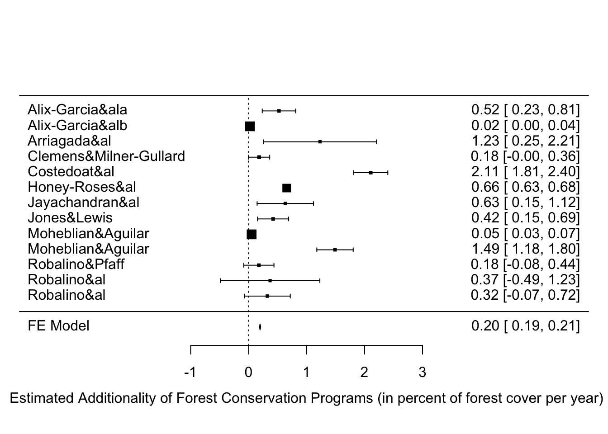
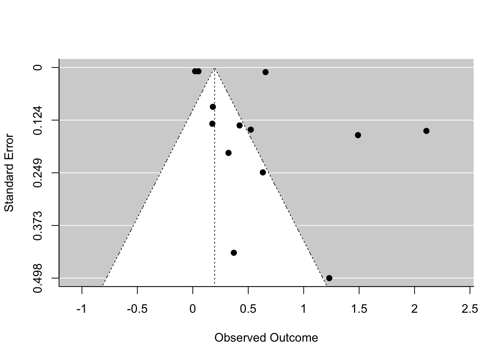

Cutting down standing forest sends GHGs in the atmosphere, especially when the forest is replaced by crops. As a consequence, programs that pay landowners not to cut their standing forest might be an effective way to combat climate change, if they succeed in maintaining enough standing forest for a reasonbable amount of money.
In this section we report on the results of several studies that have estimated the additionality of Forest Conservation Programs in developing countries. Below is the estimated additionality of these programs:
Additionality of Forest Conservation Program (in percent of forest cover saved per year)
The overall estimate is of 0.2 \(\pm\) 0.01 additional percent of forest cover saved per year.
Their results can be found here. Below is the code sending the results of the individual studies to the SKY database (once each study will have its own page, this will not be needed anymore):
# dowlnloading and sending table with individual studies
data.FCP <- gsheet2tbl("https://docs.google.com/spreadsheets/d/1VWzAgaV3fRfk3mJDzt4y3fxInM5lWrygxebocAmdxtQ/edit?usp=sharing")
colnames(data.FCP) <- c("paper.id","authors","year","add","se.add")
data.FCP <- as.data.frame(data.FCP)
dbWriteTable(SKY.db,'FCP',data.FCP,overwrite=TRUE)The meta-analysis is conducted using the fixed-effects method, assuming that the cost-effectiveness of Forest Conservation Programs is constant over time. This might be an unattractive asumption, since probably changes in prices might trigger changes in abatement costs. More estimates are needed in order to check whether this assumption is unlikely to hold. All the current evidence points to homogeneity of abatement costs over time, with the limited precision that we have.
data.FCP$var.add <- data.FCP$se.add^2
meta.FCP.FE <- rma(yi = data.FCP$add,vi=data.FCP$var.add,method="FE")
summary(meta.FCP.FE)# sending table with meta-analysis coef
data.meta.CC <- data.frame(program='Forest Conservation Programs',
coef = coef(meta.FCP.FE),
se.coef=summary(meta.FCP.FE)$se,
stringsAsFactors = F)
dbUpdateResults(con=SKY.db,table='Meta_CC',data=data.meta.CC,where=c('program'),update=c('coef','se.coef'))
funnel(meta.FCP.FE)